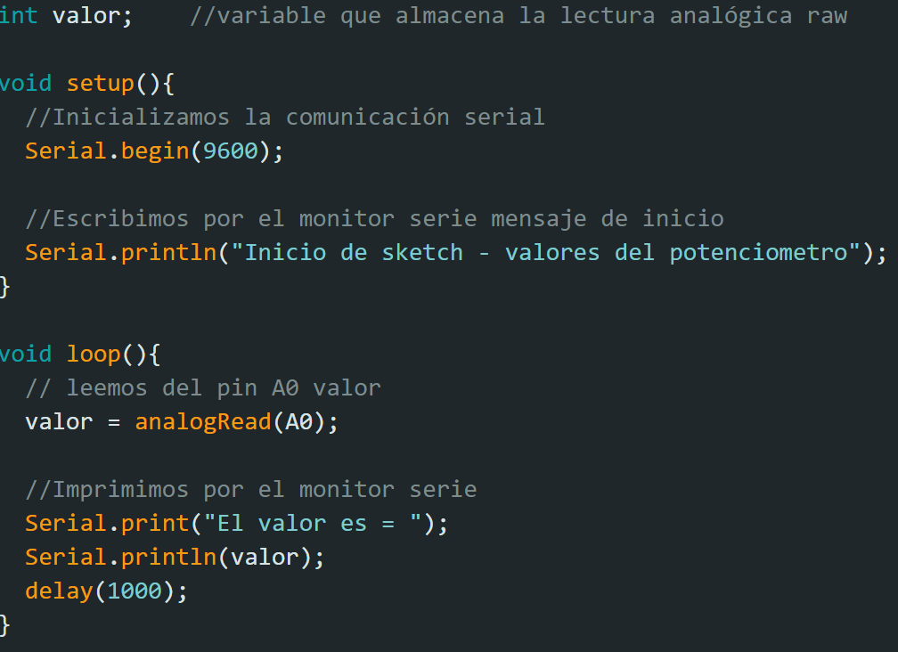

Portafolio de Actividades
Laboratorio de elementos programables
Departamento de Ciencias e Ingenierías | Universidad Iberoamericana Puebla, México.


- Resumen -
En esta segunda práctica se realizarón 8 ejercicios del curso de Arduino Básico II, para aprender el uso correcto de los componentes microservomotor y potenciómetros, además de implementarlos junto con los elementos anteriormente utilizados en la práctica I (leds, resistencias, protoboard).
- Introducción -
Para los ejercicios que se presentan a continuación se utilizaran los potenciometos como dispositivos de entradas para el Arduino UNO, este permite tener diferentes valores y no como el del botón que es único. Con los potenciometos permite a un usuario manipular el valor de salida mediante el código, esto logra que los microservomotores puedan moverse deacuerdo al usuario.
- Materiales -
- Arduino UNO
- Resistencias 220 ohms
- Botones
- Cables
- Leds
- Microservomotor
- Potenciómetros
- Desarrollo -


Código para mostrar los valores que recibe el Arduino UNO del potenciometro, los cuales pueden pueden ser procesados para mover el servo.
Potenciometro serial print
Código:

Construcción
Para la Construcción de todos estos ejercicios, se necesito como base el protoboard donde se encuentran todos los componentes necesarios, y el Arduino UNO para leer los datos de entrada y mandar datos de salida a los servomotores y leds.
- Conclusiones -
Con los potenciometos permiten a que el usuario pueda interactuar con los circuitos, en estos ejercicios tan solo mueve un servomotor en un grado deseado, pero si lo llevas a casos formales lo puedes encontrar en controles de consolas o vehículos a control remoto.
- Referencias -
Tinkercad | From mind to design in minutes: Curso de Arduino Básico II, (Clases) Rafael P., Universidad Iberoamericana Puebla, 2023.